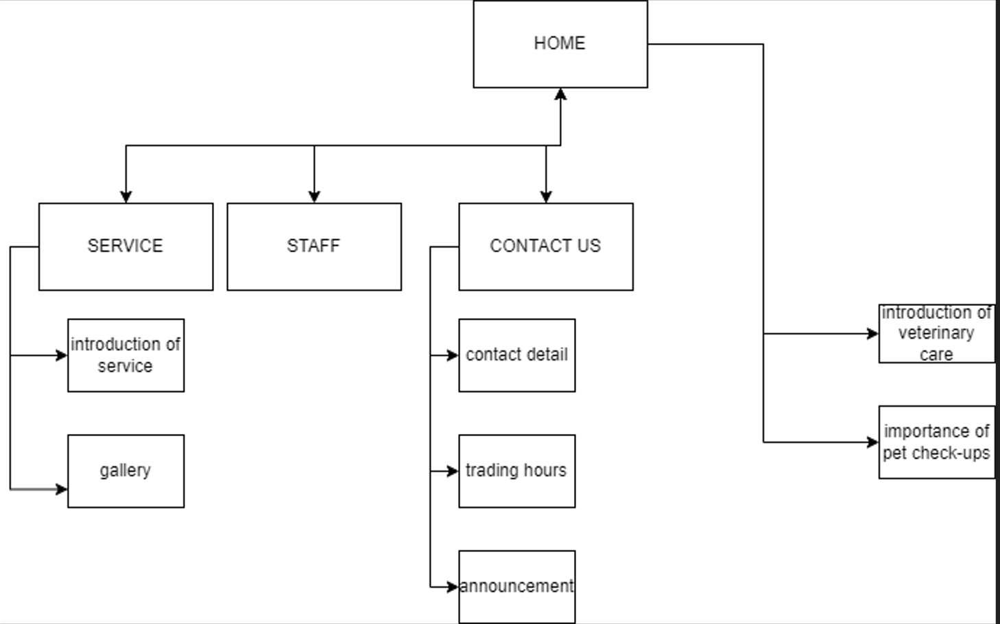

Name:Xucheng Wang
According to introductory of email, this company is built for veterinary care. They can offer a comprehensive range of veterinary services. They want to enhance their business’s online presence and expand their reach by building a website.
In Introductory email, the client mention they want to attract more customers to visit Cairnsville Veterinary Care by rising their business’s online presence. So our duty is to build a website which let more people know veterinary care's presence and describes their service clearly so that more people are willing to send their pet to veterinary care.
Target audience: the people who have pet and live in Cairnsville. Design: Since the client is running a veterinary care I am planning to use warm colors such as yellow as background color ,because I want the website visitors feel cordial. Besides, I will search for some animals and veterinary pictures because I want the audience to learn what client is doing.
